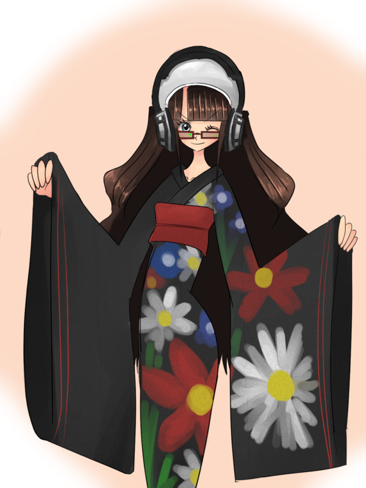
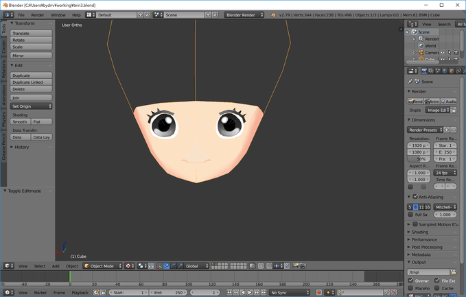
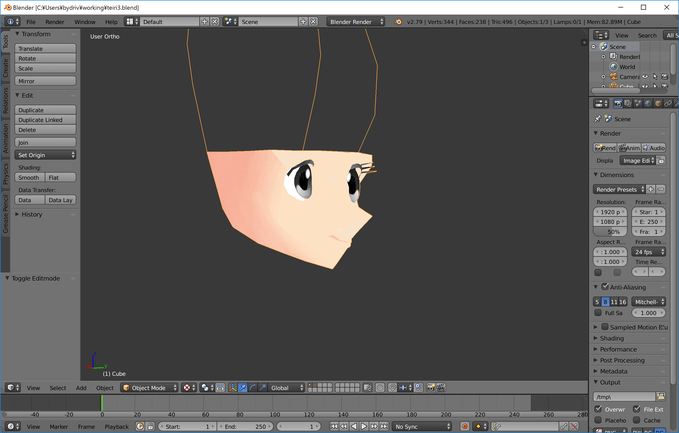

2018-01 の進捗まとめ
https://bydriv.github.io/blog/2018-01.html
created at
updated at
2018 年 1 月の進捗のまとめを軽く記録しておく． なぜ記録するかというと， マネジメントの基本は進捗を記録することではないか， とわたしはなんとなく感じているからである． 毎日記録するのはさすがにきついので， 月ごとに大雑把にまとめることとする．
基本的な方針としては， 週 (月曜日～日曜日) ごとにやったことを， 月末にまとめてゆく． そしてその反省点， および改善点などを記録する．
2018-01-01 .. 2018-01-07
2018-01-03
年明けのイラストを 1 枚描いていた．

2018-01-04
よそのこイラストを 1 枚描いた． ライセンス上の問題でここには載せない方針で．
2018-01-06
土曜日． 次のイラストを 1枚描いた．
2018-01-07
日曜日． 初詣へ行った． 気分転換は重要．
2018-01-08 .. 2018-01-14
2018-01-08 .. 2018-01-10
Blender に入門した． はじめはペンで操作すると楽そうだと思っていたが， テンキー， キーボード， マウスは必須だという結論に至った． まずは次のような下絵を用意して， それをなぞるように形状を起こした． 服ははじめから着せた方がいいのか， まだよくわかっていない．

下絵は 1 日未満で用意できたが， モデリングにはおおよそ3日がかかった． 2 度失敗してやり直し， 3 度めようやくかたちになった． 3 日の成果はだいたい次のような感じ．


なおテクスチャはこんな感じで， これをミラーリングしていたため瞳のハイライトが若干おかしくなってしまった． このへんを本職のひとがどうしているのか気になる．

2018-01-11
イラストを 1 枚描いていた．
2018-01-13
Rank2Types の推論，または Intersection Types について という記事を書いた．
2018-01-14
正規言語， NFA, DFA, および正規表現の否定について という記事を書いた．
2018-01-15 .. 2018-01-21
2018-01-15
Org mode 周辺のあれこれ という記事を書いた．
2018-01-17
x86 勉強メモ および Strictly Positive, または Coq がいかにして停止性を保証しているか という記事を書いた．
2018-01-18
2018-01-19
Layout ルール， Haskell のオフサイドルールについて という記事を書いた．
2018-01-20 .. 2018-01-21
文フリがあったので， 観光がてら京都へ行った． とても楽しかった． 帰りには名古屋にも寄った．
2018-01-22 .. 2018-01-28
2018-01-22
Haskell 2010 の FFI 周りについて という記事を書いた．
2018-01-22 .. 2018-01-28
https://github.com/bydriv/mhc というリポジトリをつくって， HsLex と HsYacc を開発していた． テスト用に JSON パーサも書き， HsYACC/HsLex の使い方 という記事も書いた． 1週間ほどでだいぶ使えるものができたと思う．
反省点や改善点など
総合的にはやはり， いろいろやってはいるのだがまとまりがなく， 成果が分散してしまっているような印象がある． 振り返ってみると絵をよく描く期間， その記事はブログ記事をよく書く期間， プログラムをよく書く期間に分かれている． このあたりをもうすこしコントロールできるようになりたい．
最終的な成果を(ゲームなりコンパイラなり)ひとつ設定して， それに寄与する行動かどうかをもうすこし考える必要がある． たとえばイラストを描くにしても， ゲームの立ち絵を描くことは最終的な成果(ここではゲーム)に寄与するだろうが， 落書きをしても寄与しないわけである． 最終的な成果に寄与しない行動が無意味というわけではないが， あまり褒められたことではない気がする． 来月以降は， このあたりをもうすこし計画的に行動してゆきたい．